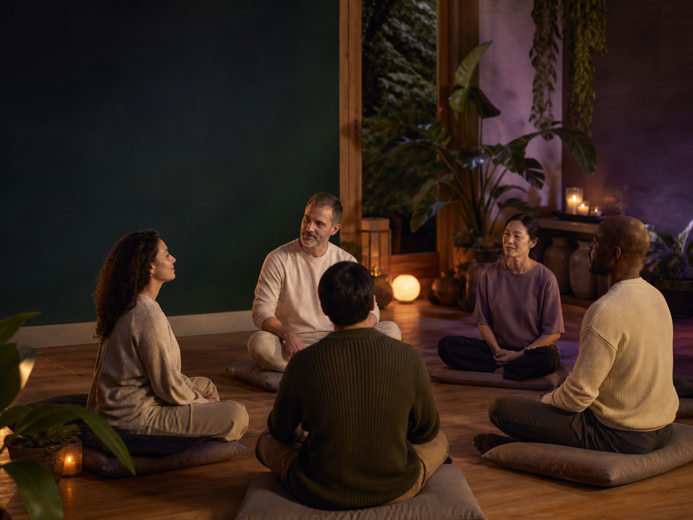

Keep a familiar foundation
Return to the framework you already know, rather than starting another intensive programme.
← View the Maintenance overview
Your initial cycle is complete. Keep a steady space for the work with ongoing ReGeneration Maintenance: two remote collective sessions each month, with room to rest and integrate between them.
There is nothing to attend: no Zoom room, call, check-in, or live attendance is required from participants.
USD 110 per month · two remote sessions each month
For participants who have completed ReGeneration Level I and Level II and their initial 4-Monday or 12-Monday Maintenance cycle.
Explore ongoing Maintenance
Within the Rainbow Sanctuary approach, the completed ReGeneration work is held through a twelve-layer, 144-point framework. Maintenance is the continuing space to return to that framework after the intensive programme has ended.
It is not a separate programme to rush through. It is a regular rhythm for noticing what supports your own sense of steadiness, refining the conditions around your practice, and allowing the work to settle gradually into everyday life.
After your initial 4-Monday or 12-Monday cycle, ongoing Maintenance offers a lighter, twice-monthly rhythm. There is no need to repeat the opening cycle to continue.
Return to the framework you already know, rather than starting another intensive programme.
Two remotely held collective sessions each month offer a regular point of return, without calls or live attendance.
Give yourself time between sessions to reflect on your own experience and the daily choices that support you.
The opening 12-Monday cycle ran from 17 August to 2 November 2026. Ongoing Maintenance is the next, optional step: two remote sessions per month, supported by a monthly subscription.
Completing an initial cycle does not automatically enrol you or start a subscription. Choose to continue through the registration link below. Contact our team if you need the upcoming session dates before deciding.
Everyone's relationship with a long-term practice is personal. The programme invites you to stay attentive to intention, rest, food, movement, and the rhythms of daily life in the way that is right for you.
If you have completed your initial cycle and would like to continue, register for ongoing Maintenance through Stripe.
$110USDper month
Two remote collective Maintenance sessions per month, following your completed initial 4-Monday or 12-Monday cycle.
This is a recurring monthly subscription, not a one-time payment. Review the price, renewal and cancellation terms in Stripe before confirming. Stripe may offer a local-currency conversion; you can select USD and review the final total.
Have a question before subscribing? Ask our team about Maintenance.
The ongoing rhythm is twice monthly. Ask our team for the current schedule; the former weekly opening-cycle dates do not apply to this subscription.
If it suits you, have a light dinner beforehand and create a quiet, familiar space for the scheduled time.
There is no Zoom link, call, check-in, or live attendance. You can rest in your own space while the remote practice is held.
This subscription is for people who have completed ReGeneration Level I and Level II and their initial 4-Monday or 12-Monday Maintenance cycle. If you are unsure whether this is your next step, ask our team before subscribing.
No. This is held remotely. There is no Zoom room, call, check-in, or live attendance required from participants.
Ongoing Maintenance includes two remote collective sessions per month. It does not repeat the weekly opening cycle. Contact our team for the current session dates.
Yes. If you choose to subscribe, the USD 110 payment recurs monthly according to the terms shown in Stripe. Your earlier one-time cycle payment does not automatically convert into this subscription.
Review the cancellation terms at checkout before subscribing. If you need help with your subscription, contact our team through the enquiry link above.